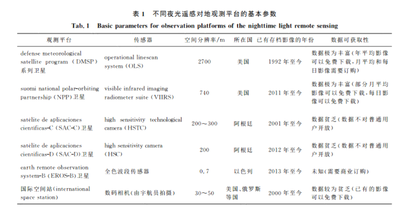
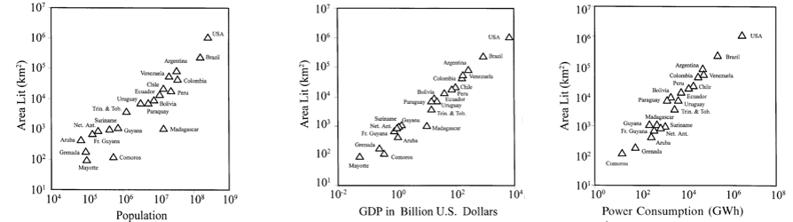
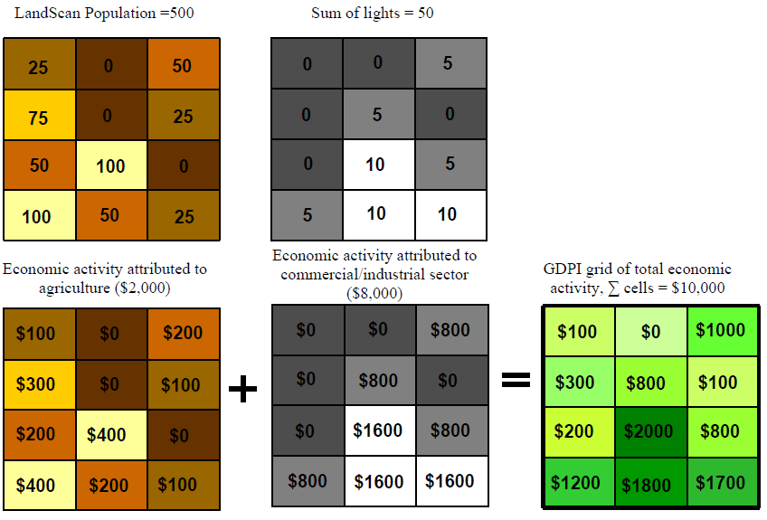
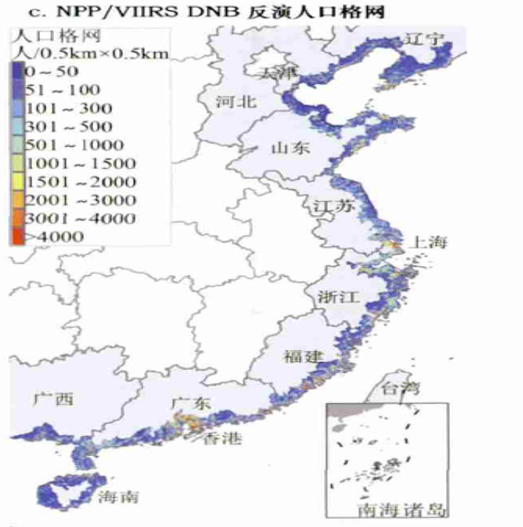
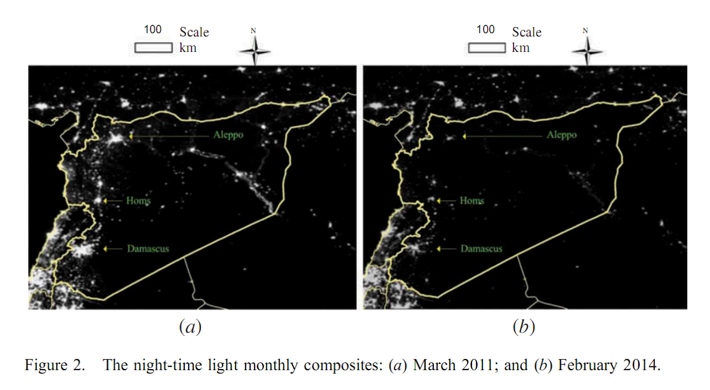
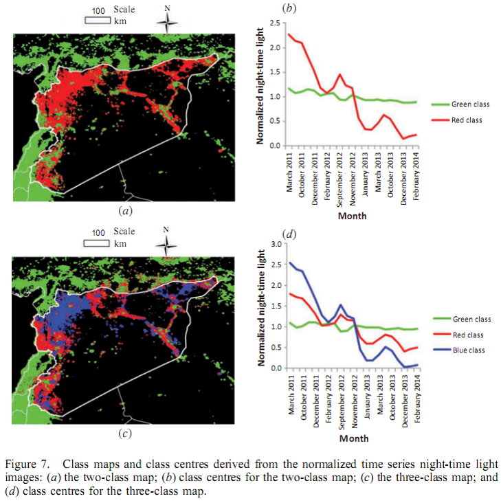

夜光遥感的起源与应用
1.夜光遥感的起源
始于20世纪70年代的美国军事气象卫星计划（defense meteorological satellite program，DMSP）的线性扫描业务系统(operational linescan system，OLS)的设计初衷是捕捉夜间云层反射的微弱月光，从而获取夜间云层分布信息，然而科学家意外发现DMSP/OLS可以捕捉到无云情况下的夜间城镇等发光。
如今，可以获取地球夜间的可见光和近红外波段影像的传感器也越来越多，随像素灰度级数与空间分辨率的提高，夜光数据开始向城市尺度前进。
2.经济参数的估算
1997年，C.D.Elvidge等人使用DMSP/OLS数据将夜光与人口，GDP以及电力消费进行回归分析，发现均存在巨大的相关性。证明了夜光参与经济估算是可行的，因此，夜光遥感数据开始被用于一些经济统计数据不完全国家经济参数的估算。（如下图）
基于上述结论，T.Ghosh,C.D.Elvidge通过夜光影像、人口密度、土地覆盖等地理信息数据，建立了一套精确的GDP空间分配模型，从而获得全球1km*1km的GDP格网图
3.人口密度空间化
高义等人用人口与灯光强度进行回归分析，从而确定了灯光强度与人口的函数关系，从而生成了中国海岸带500*500的空间格网人口密度图。
4.重大事件评估：叙利亚危机评估
2014年，李熙和李德仁使用DMSP/OLS夜光遥感数据评估叙利亚战争，发现叙利亚大部分地区灯光急剧减少。
李熙和李德仁使用K-means聚类将叙利亚及其周边地区按灯光随时间的变化划分为二类（稳定地区和下降地区）与三类（稳定，中度下降与急剧下降），发现叙利亚与其周边国家存在明显差别，说明国际边界会造成社会经济的不连续。
